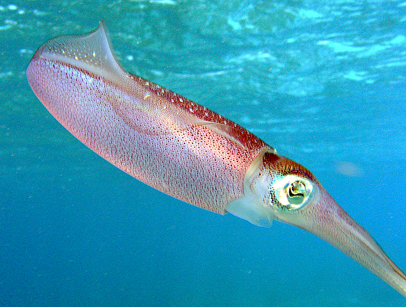
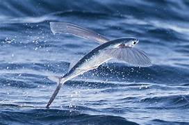
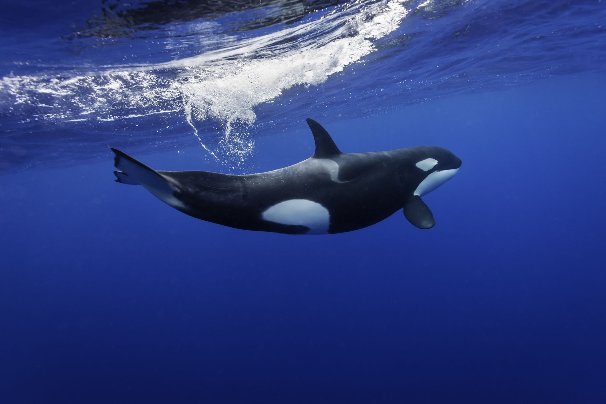

Prey of Sailfish
Sailfish are carnivorous and primarily feed on a variety of smaller marine organisms. Their diet mainly consists of:
Small Pelagic Fish: Sailfish commonly feed on small schooling fish such as sardines, anchovies, mackerels, and herrings.
Flying Fish: They also prey on flying fish, which are capable of leaping out of the water to escape predators.
Squid: Squid are a significant part of the sailfish diet, especially in areas where these cephalopods are abundant.


Predators of Sailfish
While adult sailfish are among the top predators in their habitat, they still face threats from larger marine animals and human activities:
Sharks:
Large shark species, such as the great white shark, tiger shark, and mako shark, are known to prey on sailfish. Sharks may target younger or injured sailfish, which are easier to catch.
Orcas (Killer Whales):
Orcas are apex predators that occasionally hunt large fish, including sailfish. However, such encounters are relatively rare due to the open ocean habitat of sailfish.
Commercial Fishing: Sailfish are sometimes caught as bycatch in commercial fishing operations targeting other species. This accidental capture can impact sailfish populations.
Sport Fishing: While sailfish are popular in sport fishing, many anglers practice catch and release. However, some individuals are still harvested, which can affect local populations if not managed sustainably.
